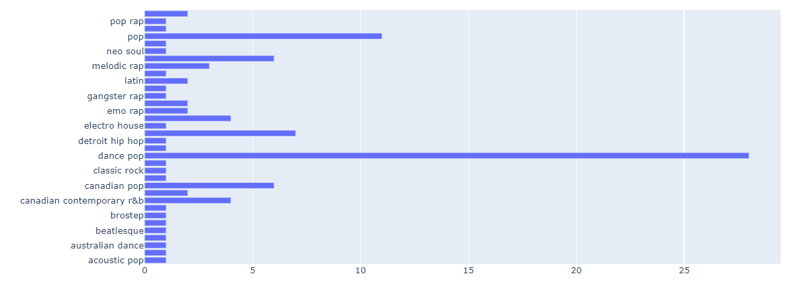
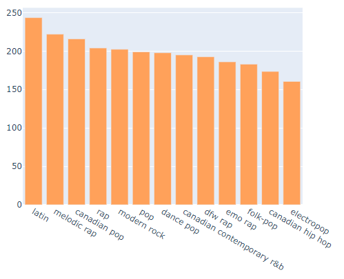
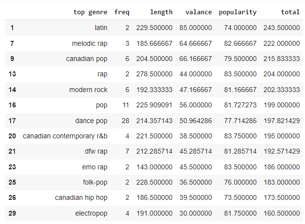
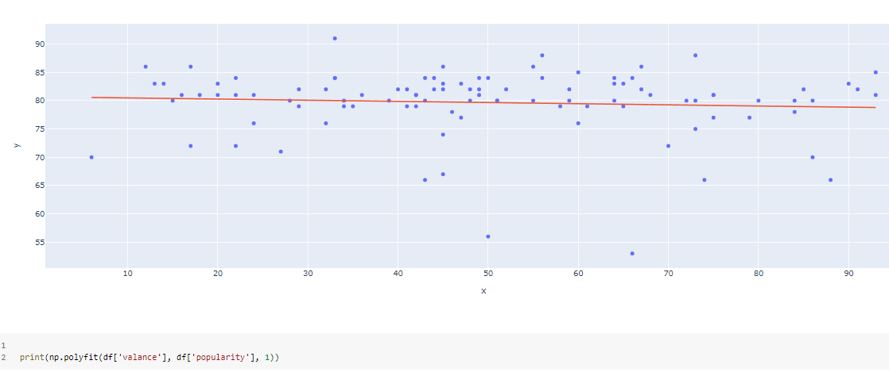
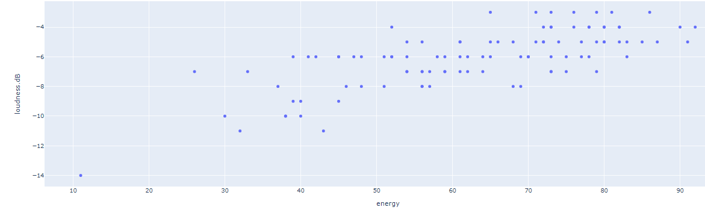

the most streamed songs on Spotify

The project about analyze and identify the factors that cause 100 the most streamed songs on Spotify based on data from www.kaggle.com by using data visualization
Source: https://www.kaggle.com/pavan9065/top-100-most-streamed-songs-on-spotify
using Data Analytics and Visualization to answer the following questions
1. what genre is most streamed?
The most streamed genre is dance pop
2. What genre do people really like?
comparing genres of song based on all the factors including frequency, length, valance, popularity and given that each factors has differnt weight for the Scoring Criteria.
Bar Chart
Scoring Table
We obtained the result that "People really like latin music especially."
3. What relationship between these factors?
We plotted the line graph using Scatter Plots in Python and polyfit from NumPy library.
As the listiner mood increase, the popularity is down linearly, so the most of people love to listen to non-happy feeling
Energy and loudness is relate directly and most listner love, more than -3 to -8 dB is prefer by the listner more than below -8 dB
- © Untitled
- Design: HTML5 UP